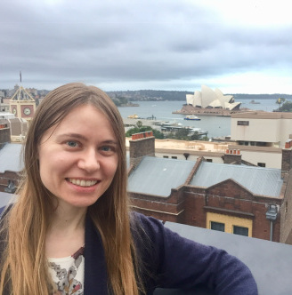

Antonina Barankevich:
An eternal student, a chronic overthinker, in a hurry to dip my toes in diverse pools of human experience
from art and design to business and technology.
Happy to make connections with people from all walks of life and get inspired by your work.
I am here to share bits of my journey and comment on salient issues. I believe in synergy between art and science,
design and music, nature and technology. I hope to put my passion to work for the benefit of humanity.
Ready to collaborate on projects involving education, design, technology, language learning, and research.